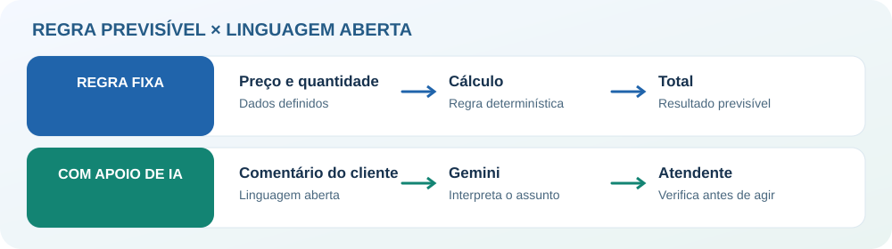

Entender o que é IA e decidir quando usar regra ou IA.
Entenda o exemplo
IA ajuda a lidar com informação: ler, organizar e rascunhar.
Um assistente muito rápido, recém-contratado: produz depressa, mas precisa de orientação e conferência.
A cafeteria tem três pedidos
Somar o valor de 3 cafés; entender uma reclamação; e enviar uma confirmação após uma compra. Parece tudo trabalho de computador, mas não é a mesma tarefa.
O que observar: Antes de escolher uma ferramenta, pergunte: preciso calcular, interpretar uma mensagem ou executar uma ação repetida?
A analogia da caixa registradora
A calculadora resolve uma soma com regras definidas. A IA ajuda a interpretar linguagem e propor textos. Uma automação executa um passo combinado, como enviar uma confirmação.
O que observar: IA, regra e automação podem trabalhar juntas, mas não significam a mesma coisa.
Compare com o Gemini
Peça ao Gemini para separar as três tarefas. Ele deve justificar a escolha e admitir quando uma regra simples é suficiente.
O que observar: Confira se não recomendou IA desnecessariamente para o cálculo de preços.
E se a resposta parecer exagerada?
Se o Gemini sugerir um sistema complexo para somar preços, não aceite automaticamente. Compare simplicidade, precisão e necessidade humana.
O que observar: Boa decisão: calcular por regra, usar IA para apoiar a leitura da reclamação e automatizar uma confirmação apenas após validar os dados.
Agora é com você
Imagine uma oficina: calcular um orçamento, organizar uma mensagem confusa e avisar que o serviço ficou pronto. Escolha a forma de resolver cada tarefa e explique por quê.
O que observar: Você conseguiu justificar cada escolha sem dizer apenas “use IA em tudo”?

PRÁTICA
Experimente no Gemini
Abra o Gemini e peça a explicação; depois peça para trocar a palavra difícil.
Na Café Horizonte temos três tarefas: (1) somar três produtos com preços fixos; (2) interpretar uma reclamação escrita pelo cliente; (3) enviar confirmação depois de um pedido. Diga qual combina com cálculo por regra, IA como apoio ou automação. Explique em frases curtas. Não invente dados.
Explique “inteligência artificial” para um cliente de cafeteria em 3 frases, sem termos técnicos.